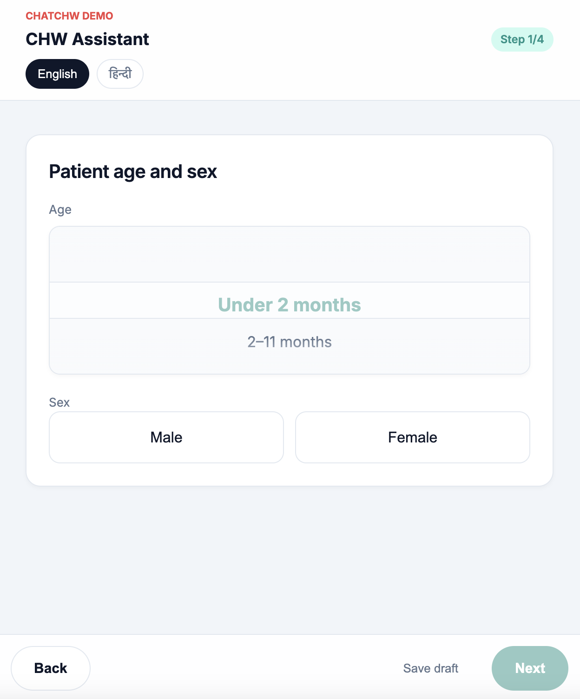

ChatCHW
Clinical decision support architecture designed for community health workers. Orchestrated a robust testing pipeline capable of processing thousands of simulated patient narratives through complex clinical logic.
Figma Prototype
High-fidelity interactive prototype mapping out the precise flow for community health workers to log diagnostics.
View Figma Prototype →
Live HTML Demo
Fully functional HTML/CSS implementation of the patient diagnostic intake interface, capturing key demographics and routing logic.
View App Demo →
Python · Docker · CHT · XLSForms · Figma · HTML/CSS/JS